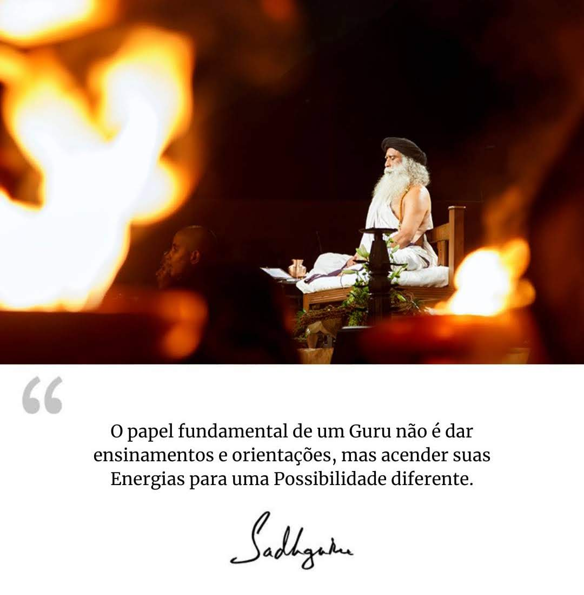

"Rompei o cordão ou desatai o laço, como vos parecer melhor.
E quanto ao ramalhete de fatos, jamais podereis destruí-lo.
Podeis ignorá-lo, e nada mais. "
- H.P.Blavatsky
"Todos os homens têm espiritual e fisicamente a mesma origem,
assim como a humanidade tem fundamentalmente
uma única e mesma essência,
e essa essência é una.
Nada, portanto, pode afetar uma nação ou um homem
sem afetar todas as outras
nações e todos os outros homens. "
- H.P.Blavatsky
Clique na Imagem ou Use o MENU Abaixo:
menu2"A educação é sobre acender uma chama, não preencher um recipiente"
- Sócrates
17. Respeita as crenças religiosas ou filosóficas, desde que não atentem contra a dignidade humana. Não apóies nem abones o fanatismo ou o integrismo, em qualquer que seja a forma. Na maneira de viver tua fé, cuida para não seres dogmático ou sectário.

Versículo do Dia - Bíblia
21 - E então, se alguém vos disser: Eis aqui o Cristo; ou: Ei-lo ali; não acrediteis. 22 - Porque se levantarão falsos cristos, e falsos profetas, e farão sinais e prodígios, para enganarem, se for possível, até os escolhidos.
"Pai de Toda Vida, atuai através de mim, neste dia, para que
eu possa ser um Instrumento Perfeito da Expansão do Bem na terra "
"O dualista tende naturalmete a se mostrar intolerante,
pensando que seu caminho é o unico.
Um Vedantista Verdadeiro deve simpatizar com tudo,
todas as escrituras, todas as verdades são Vedas;
Em todos os tempos, em todos os paises.
Porque essas verdades haverão de ser vistas,
e qualquer um pode descobrilas."
- Swami Vivekananda
Tem um tempo para DEUS ?
Conheça a Ferramenta de Libertação e Evolução: RESSONÂNCIA HARMÔNICA, para isso tem que fazer os cursos abaixo e ler o Livro de Mecânica Quântica do Hélio Couto: MENTES IN-FORMADAS
A Visão do Yoga Sobre a Física Quântica | Sadhguru Português
O Livro de Ouro do Mestre Saint Germain
e a trilogia da mecânica quântica do EU SOU
Integrando o Caminho Espiritual a Vida Cotitiana
Livro Do Caminho das Palestras
SOBRE Mecânica Quântica
Engenharia Interior: Sadguru
Ressonnância Harmônica: Helio Couto
Clique na Imagem ou Use o MENU Abaixo

“Há religiões em que se espera por um milagre,
e outras em que se reza por poderes sobrenaturais,
e até religiões em que se implora por sucesso nos negócios.
Mas a religião de Buda é uma religião em que se busca
orientar a sociedade e servir às pessoas.
A aspiração ao caminho de Buda significa
amar todo o universo assim como os pais amam seus filhos”.
Dōgen Zenji.
“Muita devoção à sua própria religião e difamação
à religião do outro resulta em ódio e discussão.
Há estupidez maior que isso?
A religião justa em todos os tempos é aquela que ilumina as pessoas
e conduz a uma maneira pacífica de viver.
Pessoas religiosas nunca devem sacar espadas umas contra as outras”.
Dōgen Zenji.
“Quando eu estava hospedado em Tiantong-jingde-si,
encontrei um monge chamado Lu de Qingyuan em frente ao Buddha Hall.
Ele estava secando cogumelos ao sol.
Ele tinha uma vara de bambu na mão e nenhum chapéu cobrindo sua cabeça.
O calor do sol era abrasador, parecia muito doloroso,
suas costas estavam curvadas como um arco
e suas sobrancelhas eram brancas como as penas de uma garça.
Fui até ele e perguntei: ‘Há quanto tempo você é monge?’.
‘Sessenta e oito anos’, disse ele.
‘Por que você não tem um assistente para fazer isso para você?’.
‘As outras pessoas não são eu’.
Eu fui movido... Perguntei: ‘O que é prática?’ e foi dito:
‘Nada em todo o universo está escondido’.
Dōgen Zenji.
Não percam outros vídeos do Tiago Brunet 👉Página Café
10 CONSELHOS PARA O PRÓXIMO ANO
Mateus 5:17
Não pensem que vim abolir a Lei ou os Profetas; não vim abolir, mas cumprir.
⇒ Vejam, e se junte a nós, nas Orações do MENU: ORAÇÃO !
Não percam os Vídeos do Pastor Rodrigo👉Página Pr Rodrigo
"Oração da Manhã":
“Eu comando intercessão divina em nossas vidas agora,
para que possamos todos elevar-nos na consciência da luz cósmica!
Assim sendo, coloco-me à disposição da Grande Fraternidade Branca;
coração, cabeça, mãos e pés, todo o meu ser.
Use-me Senhor, para fazer deste planeta um local verdadeiramente iluminado.”
"Mantra para a ressurreição"
* pode ser entoado todos os dias.
EU SOU a chama da Ressureição
Irradiando Sua pura Luz em mim.
Agora, estou elevando cada átomo,
De todas as sombras, Eu Estou livre.
EU SOU a Luz da Presença Divina
Eu Estou vivendo Sempre Livre.
Agora a chama da Vida Eterna
Eleva-se para a Vitória. (3x)
As Doze Qualidades que Deus quer ver manifestadas por seus filhos na Terra são:
- O Poder Criativo da Vida
- O Amor da Compaixão ao Próximo
- A Mestria do Plano Divino
– O Auto Controle da Comunicação Mental com a Única Mente Superior
- A Obediência às Leis de Deus e ao seu Plano Divino
- A Sabedoria do Pensar com Deus antes de agir e falar
- A Harmonia das Energias Purificadas na adoração a Deus e no respeito à Vida
- A Gratidão à Liberdade da Vida em Deus
- A Justiça da Igualdade Divina entre irmãos
- A Realidade da Vontade Divina Manifestada para servir a Deus
– A Visão da Vontade de Deus Manifestada
- A Vitória da Conclusão do Plano Divino Manifestado
O profeta é o mensageiro de Deus. Mensageiro e profeta de Deus, é a mesma coisa.
Salmos 115:17
Os mortos não louvam ao Senhor, nem os que descem ao silêncio.
Eclesiastes 9:5
Porque os vivos sabem que hão de morrer,
mas os mortos não sabem coisa nenhuma,
nem tampouco terão eles recompensa,
mas a sua memória fica entregue ao esquecimento.
Isaías 8:19
Quando, pois, vos disserem: Consultai os que têm espíritos familiares e os adivinhos,
que chilreiam e murmuram: Porventura não consultará o povo a seu Deus?
A favor dos vivos consultar-se-á aos mortos?
▶ Trechos extraídos do web site ▶️ www.eusouluz.com.br ◀️
Filme da Semana 👇
Quase Deuses O Refúgio Secreto
O Carpinteiro O Físico
Por Onde Anda Minha Felicidade
Velas no Escuro Lutero Heidi
Cartas para Deus Garabandal
A cabana Lição de Vida
O Caminho para a Eternidade
O Caminho para a Eternidade 2
Ganghi A PAIXÃO DE CRISTO
Uma Nova Inteligência 40 dias
Nossa Senhora de Guadalupe
BAAHUBALI
Imagens da Semana 📸
Grupo de Estudos EU SOU Luz
Imagens da Semana 📸

Licença MIT, o que é? 👇

A Palavra Infalível do Eterno 👇
"Oração de São Francisco":
Onde houver ódio, que eu leve o amor.
Onde houver ofensa, que eu leve o perdão.
Onde houver discórdia, que eu leve a união.
Onde houver dúvidas, que eu leve a fé.
Onde houver erro, que eu leve a verdade.
Onde houver desespero, que eu leve a esperança.
Onde houver tristeza, que eu leve a alegria.
Onde houver trevas, que eu leve a luz.

Ó Mestre, fazei que eu procure mais:
consolar, que ser consolado;
compreender, que ser compreendido;
amar, que ser amado.
Pois é dando que se recebe.
É perdoando que se é perdoado.
E é morrendo que se vive para a vida eterna.
▲